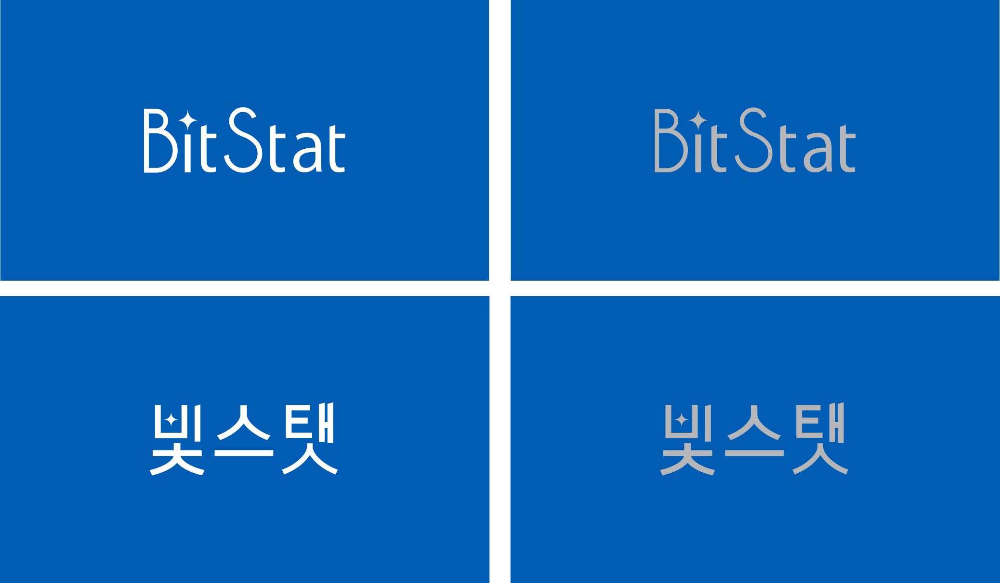
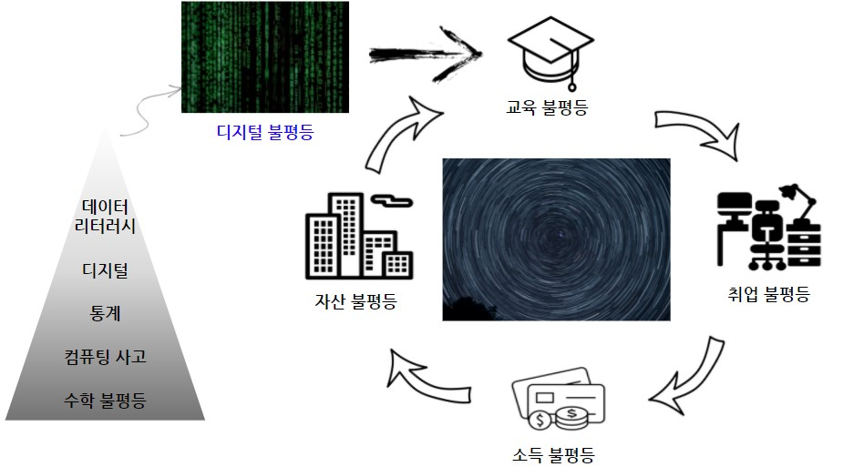
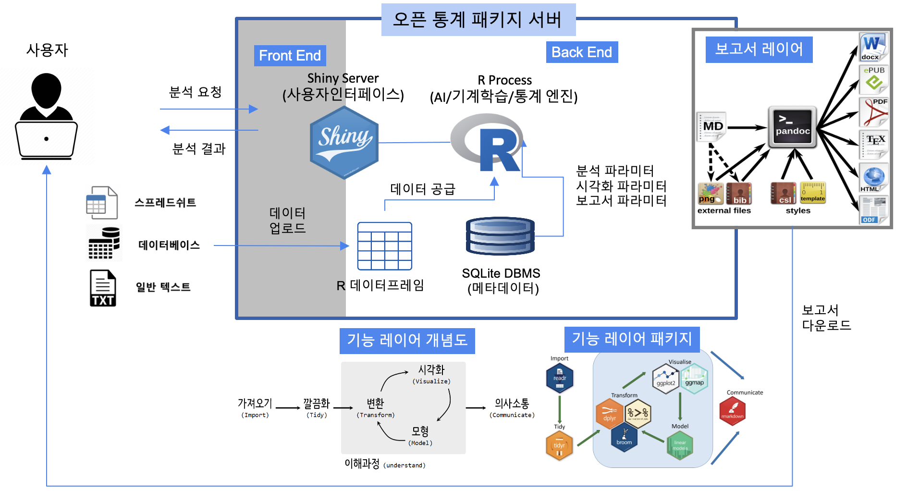
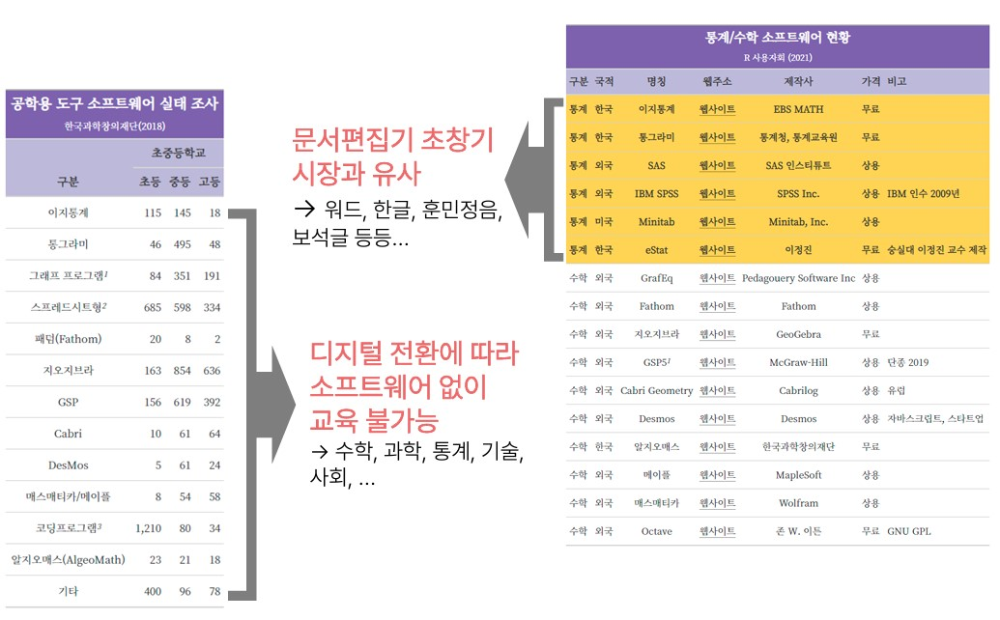

오픈 통계 패키지
Data Literacy 역량 강화를 위해 컴퓨터를 처음 접하거나 데이터 작업이 처음인 대한민국 국민 누구나 쉽게 통계 패키지를 접할 수 있도록 하고 데이터 프로그래밍 역량도 수준별로 강화할 수 있도록 새로운 형태의 블록 통계 분석을 포함한 오픈 통계 패키지 개발을 목표로 합니다.

프로젝트 개요
코로나19로 인해 심화된 디지털 불평등과 디지털 전환(Digital Transformation)으로 인해 시민의 필수 역량이 된 Data Literacy 역량 강화와 통계 대중화를 위해 오픈 통계 패키지 - 빛스탯(BitStat) - 를 개발하게 되었습니다. 데이터 리터러시 역량은 결국 디지털 불평등과 맥이 닿아 있고 이후 교육불평등, 취업불평등, 소득불평등, 자산불평등으로 이어져 사회 양극화를 심화시키는 주범으로 지목되고 있다.

기대 효과
- 기술적 측면
- 기하급수적으로 증가하는 데이터를 분석하여 가치를 창출하는 데이터 경제가 급부상하고 있으나, 인력 육성이나 도구는 선형적 증가 상황을 타개할 수 있는 혁신적인 기술이 요구됨
- 폭발적으로 늘어나는 데이터를 일반국민도 활용할 수 있도록 하는 공개SW 통계 패키지는 다분야에서도 활용 가능한 Auto-X 기술을 기반으로 통계분석 생산성과 품질을 큰 폭을 높일 수 있는 혁신적인 기술임
- 경제적, 산업적 측면
- ’22년 글로벌 빅데이터, 분석시장 규모는 전년 대비 27% 성장한 $2,740억 달러 규모 전망
- IDC, “Revenue from big data and business analytics worldwide from 2015 to 2022”, 2021년 9월
- 오픈 통계 패키지에 내장된 Auto-X 기술을 포함하여 공개SW로 개방하여 중소기업 및 데이터 기반 의사결정을 지원하고, 공개SW 활용 스타트업을 통한 신규 부가가치 창출
- ’22년 글로벌 빅데이터, 분석시장 규모는 전년 대비 27% 성장한 $2,740억 달러 규모 전망
- 사회적 측면
- 지속적인 공공데이터 확대, 데이터3법 통과에 따라 데이터가 늘어나고 데이터 경제가 급속도로 커짐에 따라 데이터 리터러시(Data Literacy) 능력과 디지털 불평등의 양극화가 확대됨에 따라 오픈통계 패키지 SW를 공급하고 서비스로 제공함으로써 사회통합과 통계 대중화에 기여할 수 있음
BitStat 아키텍처
데이터 통계 분석의 대중화를 위해서는 통계 비전공자 및 일반인이 쉽게 사용할 수 있는 통계 패키지 소프트웨어 개발 취지에 맞춰 데이터를 입력하면 이를 인식하여 통계 분석 후 산출물을 자동 생성할 수 있는 오픈소스 기반의 클라우드 통계 패키지 소프트웨어.

BitStat 시연
BitStat 통계 패키지는 지속적으로 개발을 이어나가고 있으며 2021년 12월 기준 개발버전을 업그레이드하여 2022년 7월 대대적인 업그레이드가 예정되어 있다.

참고자료

- 한국 R 컨퍼런스 발표 - Digital Divide Solution - 오픈 통계 팩키지
- 국산 오픈 통계 팩키지
- 2021 오픈소스 컨트리뷰션 아카데미 - Tidyverse Korea 데이터 과학
- 오픈 통계 팩키지 개발 안내서
tidyblocks- Tidy Blocks 한글화 지원 : https://github.com/tidyblocks/tidyblocks/
- Tidy Blocks 블록 통계 프로그래밍 안내서 한글 번역: https://tidyblocks.tech/en/guide/
- 한글 사례(Example) 추가 및 확대 : https://tidyblocks.tech/en/examples/
- 통그라미